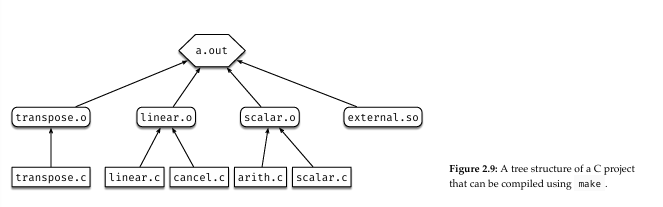

2.1 Introduction
To include libraries in c looks like
#include <stdio.h> where stdio.h is a commonly used library name.
C works similarly to C++, where statements end with a ; and code starts in the main function and functions have an associated type that must be returned. (ex: int main() must return an int)
Block comments are opened with /* and closed with */, use // to make single line comments.
The data types are also similar to c++, and some common ones are listed below.
Integers: int
Floats: float
Double: double
Characters: char, must be in single-quotes ''
The number 0 is false, all other numbers are true.
Since C doesn't have a boolean type, it is best to use an integer where 1 is true and 0 is false.
The size_t datatype is essentially an unsigned int used to iterate through arrays.
uint_32 is a datatype that is a 32-bit unsigned int.
Arrays work similarly to C++ aswell, arrays need their size declared when they are declared, and can have multiple dimensions, and can have values assigned when they are declared. Ex: int matrix_2[3][3], int matrix_3[3] = {1, 10, 100}, in the second example it is possible to leave the [] blank and the compiler will determine the array should have a size of 3.
There is no string type in C, strings are just character arrays.
Two ways to declare a C string
char str[] = {'h', 'e', 'l', 'l', 'o', 0};
char str[] = "Hello"
No need to declare length, and all must have a null terminator, it is automatically added with the second implementation, but required for the first
Some useful functions include strlen() which calculates length not including null terminator, and strcmp() which compares two strings and returns 0 if equal, and something else if not.
So far we've discussed primitive data types. Composite data types are structs made of primitive data types.
Imagine a rectangle with length and width values that are floats, in this example the rectangle is a composite data type.
C structs do not need constructors or deconstructors. Below is this rectangle struct implemented and how to assign values or initialize it.
This would be implemented as below
struct Rectangle {
float width;
float length;
};
struct Rectangle box1 = {.width = 10, .length = 20};
struct Rectangle box2;
//first 4 are assigning values directly, last is using a pointer to a struct to assign values
box1.width = 10;
box1.length = 20;
box2.width = 13.5;
box2.length = 33;
pointerbox1->width = 10;
By adding the keyword typedef before struct when making the struct, you can skip adding the keyword struct when initializing it.
The members or values of a struct are stored linearly based on the order they are declared
In the example above, .width was declared before .length, so .width occupies the first 4 bytes with offset 0, and .length occupies the next 4 with offset 4. (see 2.1)
the macro offsetof(struct structname, structmember) where structname and structmember are variables, and struct will remain struct, will return the offset of the member in that struct.
If a struct has different types, ex: a struct with char a and int b, the struct will also have 8 bytes despite chars taking 1 byte.
This is because of alignment, which is a rule that a different type of data in a struct should always start at an address that is a multiple of 4. (see 2.3 and 2.2) Since most data types are multiples of 4, this normally isn't a worry unless you are dealing with chars (1 byte) or shorts (2 bytes)
This is important when working with storage efficiency with structs. Which struct is smaller, and by how many bytes?
C
struct S1 { char a; int b; char c; };
struct S2 { char a; char c; int b; }; S2 saves 4 bytes
Using bit-fields also makes structures more compact
The smallest data type, char can represent data in the range of [0, 2^8-1]. Though it is common to only need variables that represent 1 or 2 bits, and using char for them will waste space.
Given the example
struct S1 {
unsigned char ge;
unsigned char te;
unsigned char season;
};
ge = whether the student passed all general electives te = whether the student passed all technical electives season = season student was born
all of this data can be represented in a total of 4 bits, but 3 chars will use 24
by using bit fields to label how many bits is needed for each variable we can make this 6x as efficient : n where n is the number of bits.
struct S1 {
unsigned char ge : 1;
unsigned char te : 1;
unsigned char season : 2;
};
The downside is you can't get the address of each variable since the 4 bits form a single byte, and bytes are uniquely addressed.
Structs in C each member has their own space in memory, but there is another composite data type called union where all all members (called alternatives) share the same memory space.
Unions are defined the same way as structs but with the keyword union instead of struct.
The size of a union is determined by its largest alternative, so a union with a char (1 byte) and an int (4 bytes) will be 4 bytes. See figure 2.4 below for picture.
Unlike a struct where each member is initialized separately, if you initialize one alternative of a union, the other alternatives will be initialized too.
Unions are very effective for viewing the same data in different types. Below is an example of a union that is initialized with an integer, but prints it's binary form as a string(char array)
void view_bytes(int num) {
union data {
char bytes[4];
int integer;
};
union data d;
d.integer = num;
for (int i = 0; i < 4; i ++) {
printf("0x%x ", d.bytes[i]);
}
printf("\n");
return;
}
In C some compilers need the function header before the function. The function header is the same as when you make the function, but instead of having { and then code, it just has a semicolon.
ex:double get_volume(double length, double width, double height);
the parameter names are optional so double get_volume(double, double, double) is also valid
Besides that it's just writing a function in C++, I hope you know how to do that, ngl i'm not gonna write how to write a function to a bunch of 4th sem cs majors lol *do make sure the type of the function matches the return value
argc and argv (cs385 stuff) argc = count of arguments argv = array of arguments all arguments, first index is the command itself, in C each entry is a char array regardless of the input
the C standard library <stdlib.h> has 2 macros for exiting, EXIT_SUCCESS and EXIT_FAILURE, these are used to determine if the program termination was successful or not.
To see the exit code of a previously executed program run echo $? after running the program.
Using a return statement such as return 0 in a C main() function will return to the C startup-routine, which will call exit(), if we call exit() or pass a code in such as exit(0) it will call up the exit handler, and then perform I/O cleanup that will cleanup the buffer, and then call _exit() which is a system call that never returns and will exit the process entirely. Figure 2.6 below shows an image of the exit process in C
2.2 C Standard I/O Library
The C standard i/o libary is <stdio.h> and includes all the functions needed to interact with files, the terminal, strings, and anything else to process inputs and outputs.
See: https://www.ibm.com/docs/en/zos/3.1.0?topic=files-stdioh-standard-input-output for documentation
Files in C are a struct pointer FILE*, which is usually called stream. Standard input/output is just a stream. Since every UNIX/Linux system uses stdin, stdout, and stderr, they are also used in this course for C and are declared below.
#include <stdio.h>
extern FILE* stdin;
extern FILE* stdout;
extern FILE* stderr;
To read and write to a file stream, the following functions are used.
int fprintf ( FILE* stream, const char* format, ... );
int fscanf ( FILE* stream, const char* format, ... );
From now on print all error messages to stderr like this example.
if (argc != 2) {
fprintf(stderr, "Usage: %s <file>\n", argv[0]);
exit(EXIT_FAILURE);
}
fprintf() and fscanf() work very similarly to printf() and scanf() respectively, but the latter default to stdout while the former let you choose which stream to send your message to.
FILE* can also be used to open text files to read/write, fopen() and fclose() allow you to open and close a file, the first argument for fopen() is the path to the file as a string, and the second is the mode, (use w+ for read/write with override)
Once open fopen() will return a FILE* pointer that can be used in fprintf() and fscanf(). Make sure to check if fopen() returns NULL so you don't creash the program.
Use getline() to get the content from a line. To retrieve the contents of a file, use getline() in a while loop.
The example below shows how to properly use all of the functions taught,
/*** readline.c ***/
#include <stdio.h>
#include <stdlib.h>
int main(int argc, char* argv[]) {
FILE* stream;
char* line = NULL;
size_t len = 0;
ssize_t nread = 0;
if (argc != 2) {
fprintf(stderr, "Usage: %s <file>\n", argv[0]);
exit(EXIT_FAILURE);
}
if ((stream = fopen(argv[1], "r")) == NULL) {
fprintf(stderr, "Error in opening file!\n");
exit(EXIT_FAILURE);
}
while ((nread = getline(&line, &len, stream)) !=-1) {
printf("Retrieved line of length %zd:\n", nread);
}
free(line);
fclose(stream);
exit(EXIT_SUCCESS);
}
2.3 Error Handling
In the GNU C library, there is a global variable errno in <errno.h>, When a library function goes wrong and returns -1, it also sets a value to errno. If it doesn't go wrong, then errno does not change. The values of errno are macros and listed at this link: https://www.gnu.org/software/libc/manual/html_node/Error-Codes.html
File I/O erros are super common so there is already a macro defined. When fopen() returns a NULL pointer (it failed to open a file), it also sets errno to ENOENT. Since we have an error message already produced, instead of writing your own, use perror() to print out the error message that already exists. Still make sure to exit(EXIT_FAILURE) afterwards though.
2.4 Pointers
Every variable in memory has an address.
To get said address use & before the variable name.
The address is different each time the program is ran.
The value of an array's name is the address of the first element.
Pointers are just data types that store addresses.
To declare a pointer add * before the type declaration of the pointer. The pointer's type must match the type of the variable the address you are trying to store points to.
To dereference a pointer add * before the name of the pointer when it is used in code. This will give the variable the pointer is pointing to.
Another way to call the elements of an array besides array[i] is to use the fact that array is just the address of array[0] and, then adding i as an offset since from 382 arrays are consecutive data with an offset. After adding i, dereference the result. Ex: *(array + i) to get the ith element of an array.
The order of operations in C can be found here: https://en.cppreference.com/w/c/language/operator_precedence
C is a pass-by-value language. So to update variables passed to a function in C, you must use pointers.
To properly change the value of a variable in a function using another function, pass the address of a variable instead of the variable itself. Then use dereferencing to get the actual variable.
Pointers can also have pointers, to change the value of a pointer passed into a function, you must use the address of the pointer variable NOT THE ADDRESS STORED IN THE POINTER to a function.
Null pointers are simply any type of pointer that points to an address NULL or 0.
Void pointers (void*) are pointers that can't be dereferenced. This is because to dereference a pointer you need to know the size of the variable it is pointing to. This is just not possible with void pointers. The benefit of void pointers is their flexibility since they can point to any type. When using void* for arrays, pass the element size and the array length.
Once you determine the type of the void*, you can cast it to that type and dereference it.
Ex: double* double_ptr = (double*)void_ptr where void_ptr is of type void* which we know represents a pointer to a double. This will allow you to then dereference double_ptr to get the variable void_ptr pointed to.
In virtual memory, functions and variables are stored similarly. Local variables are stored in the stack, while dynamically allocated variables are stored in the heap. There is also another area to store code, which is where our code, once translated to machine language, is stored. Since it is stored, it has an address.
The address of a function is the address of the function's first machine instruction, and are associated to the declaration of the function they are pointing to.
Ex: to make a pointer to point to the following function
int addition (int x, int y) { return x + y; }
Then define it's type as int (*func_ptr)(int, int); where func_ptr is the pointers name. This pointer can point to any function that uses two ints as parameters and returns an int.
You can then set pointer equal to the function's address by simply doing func_ptr = addition;.
To use a function pointer as a function, you can either dereference the name and then pass parameters like int result = (*func_ptr)(4, 5);, or just use the name as the function name like int result = func_ptr(4, 5);
An example of why function pointers is important is the quick sort function in the C standard library.
#include <stdlib.h>
void qsort(void* base, size_t nmemb, size_t size, int (*compar)(const void*, const void*));
In sorting algorithms, an array is needed, but there is no way to tell what the type of the array is. Therefore, the length of the array nmemb, and size of each element size are required parameters.
Since we also have no idea what the type of the array is, we have no way to know how the user would like the array sorted or by what criteria. This is where the user can input a function to tell qsort() how to sort the array it is given. An example of sorting a struct Employee by their salary in increasing order is listed below.
struct Employee {
char* name;
int age;
int salary;
};
struct Employee workers[20];
int salary_up(const void* a, const void* b) {
struct Employee* pa = (struct Employee*)a;
struct Employee* pb = (struct Employee*)b;
if (pa->salary < pb->salary) return 1;
else if (pa->salary > pb->salary) return-1;
else return 0;
}
qsort(workers, 20, sizeof(struct Employee), &salary_up);
2.5 C Compilation Process
gcc stands for GNU Compiler Collection, has all the software needed to turn C code into an executable.
The software is: preprocessor, compiler, assembler, and linker.
Typing gcc with no flags, runs the entire compilation process and makes the executable. Adding flags allows us to get intermediate parts of the process. See table 2.1
Preprocessing
#include starts with a #, and are called directives. Before turning C code into assembly, the first step is to run preprocessing.
To view the output of preprocessing in a file.
gcc macro.c-E > macro.i
.h or header files contain function declarations, all standard C header files are located at /usr/include, and the preprocessor will automatically go there to search for it.
If a header file is created by us, it must have "" around the path of the file instead of <> around just the file name, so the preprocessor knows where to look.
ex: #include "utils.h" (same directory, only time just name),#include "../utils.h", file in the parent directory.
To make macros in C, simply follow this form
#define macroname value, where macroname is the macro's name, and value can be anything. Upon preprocessing, any appearance of macroname will simply be replaced with by value. BY ANYTHING ACTUALLY ANYTHING (even lines of code).
Use macros only when necessary since they do make it difficult to debug and read if used too freely.
Macros can have parameters passed to them like functions, ex:
#define
CALC_AREA(x,y) x * y
int main () {
double length = 10;
double width = 20;
double area = CALC_AREA(length, width);
return 0;
}
multi line macros that represent larger chunks of code are also possible, ex:
#include <stdio.h>
#define COMPARE(x,y)\
if (x > y) printf("Larger!\n"); \
else printf("Not larger!\n");
\ indicated that the macro is not over at that line.
Since #define is read line by line, make sure each macro is recognized as 1 line.

Macros can also be used to control which parts of the code to compile. and have this structure, this is called conditional macros
#ifdef <symbol1>
/* Stuff that'll be compiled
if symbol1 is defined */
#elseif <symbol2>
/* Stuff that'll be compiled
if symbol2 is defined */
#else
/*All Others */
#endif
/*** macro.c ***/
#include <stdio.h>
#define FINISHED //change FINISHED to DRAFT and the ifdef becomes true
int main (int argc, char** argv) {
#ifdef DRAFT
printf("I'm a draft!\n");
#else
printf("I'm finished!\n");
#endif
return 0;
}
Here is an example of using conditional macros to debug a program
/*** macro2.c ***/
#include <stdio.h>
#define DEBUG
int largest(int arr[], int n) {
int i;
int max = arr[0];
for (i = 1; i < n; i ++) {
#ifdef DEBUG
printf("Checking number [%d]: %d\n", i, arr[i]);
printf("Current max: %d\n", max);
#endif
if (arr[i] > max) max = arr[i];
#ifdef DEBUG
printf("Current max: %d\n\n", max);
#endif
}
return max;
}
int main (int argc, char** argv) {
int arr[] = {10, 324, 45, 90, 9};
int n = 5;
printf("Largest in given array is %d\n", largest(arr, n));
return 0;
}
The only job of the preprocessor is to expand macros or preprocessor directives. It does not check for syntax outside of lines that start with #
If code has errors outside of #, it will still generate preprocessed code for the compiler.
Compiling
The output of the preprocessor will be passed to the compiler, comments have been removed and macros have been expanded, it is just C language with no preprocessor directives.
The compiler will translate the C into assembly, so the compiler will check for any syntax errors in the code itself. All syntax errors come from the compiler.
Note this is purely syntax errors, not any other errors, so the following code will pass the compiler.
#define N 14
int mian () {
a = a + N
getsome();
}
This is because not all C code needs a main() to run, and the getsome() function was called correctly, and that is all it cares for, it does not care that the function is undefined since all the compiler needs to do is translate it to assembly, and the line getsome(); can simply be translated as BL getsome in assembly.
At most we would get a warning from the compiler that would look at follows.
demo.c: In function ‘mian’:
demo.c:4:9: warning: implicit declaration of function ‘getsome’ [-Wimplicit-function-declaration]
4 | getsome();
| ^~~~~~~
The compiler will produce object files called relocatable object files(ROF) that are merged by the linker into one executable.
Linking
The linker will combine multiple ROFs generated by the compiler into one executable. All functions and symbols should have been defined, and there needs to be a main() function.
A symbol is a function or a variable.
Symbol resolution is to ensure that the symbols in our program are defined.
Remember the compiler from above processed getsome() as BL getsome despite there not being any defintion, now the linker will try to find the definition of getsome().
Since an executable has only 1 text segment and 1 data segment, but since we can be compiling multiple RFOs, each have their own data and text segments which all (assume to) start at address 0. The goal of relocation is to merge multiple text/data segments in 1 text/data segment, and recalculate branching or data addresses as needed in the executable.
Using Makefile
When a project is larger, it's compilation gets more complex. Make(remember 385?) has been a powerful tool to automate compilation. The script executed by Make is called a makefile.
A makefile is like a bash script but with many differences.
When running a bash script, the commands are run in a linear order with some control flow A makefile can also run commands, but the flow of the commands depend on the dependencies of the source code.
A makefile also has a different structure and different syntax primarily consisting of rules.
Here is the structure of a rule in a makefile.
target: dependencies
<tab>system_command_1
<tab>system_command_2
<tab>system_command_3
...
Here is an example of a makefile
all: dep1 dep2 dep3
@echo "* Linking all objects..."
@echo "Done!"
dep1: dep1.1 dep1.2
@echo "dep1..."
dep2:
@echo "I'm dep2"
dep3:
@echo "I'm dep 3"
dep1.1:
@echo "dep1.1"
dep1.2:
@echo "dep1.2"
clean:
@echo "Cleaning up..."
Note the commands must be indented by a tab, not spaces.
Naming that example makefile Makefile, and running make will run the file with the following output.
dep1.1
dep1.2
dep1...
I'm dep2
I'm dep 3
* Linking all objects...
Done!
As you can see, the echo commands are not being ran line by line like in a bash script. It is actually more like a tree structure (see picture below)
Makefiles actually execute from bottom to top rather than top to bottom, for example, to execute dep1, both dep1.1 and dep1.2 must be executed first.
Though rules themselves are executed linearly, and if a command is prefixed with an @, it will be executed as usual. If there is no @ present, the command itself will also print. There is also a target called clean which removes some of the by-products of executing the makefile, it can be ran by using make clean.
As an example, lets say we have a C project for matrix operations and it's structure is shown below in 2.9.
To write the makefile for this project, the goal is to make a.out using transpose.o, linear.o, scalar.o, and external.so. Note those .o files come must also be made themselves too, we are only given the .c files at the bottom of the tree structure.
Therefore the first rule will require transpose, linear, and scalar to be ran, and then it will run gcc on those object files with external.so to generate a.out
all: transpose linear scalar
@gcc transpose.o linear.o scalar.o external.so -o a.out
Though we are not given the .o files to run all:, we are given the .c files so we must generate the .o files. The commands to generate these .o files are as follows.
transpose: transpose.c
@gcc transpose.c -o transpose.o
linear: linear.c cancel.c
@gcc linear.c cancel.c -o linear.o
scalar: arith.c scalar.c
@gcc arith.c scalar.c -o scalar.o
Since we won't need the .o files once we are done compiling the final executable, we can remove them in a clean target as seen below.
clean:
rm-f *.o
Variables can also be used in makefiles, and it is useful when you need to change the compiler or the compiler operations. Below is an example
CC=gcc
CFLAGS=-c -Wall
all: transpose linear scalar
$(CC) transpose.o linear.o scalar.o external.so-o a.out
transpose: transpose.c
$(CC) $(CFLAGS) $^ -o transpose.o
linear: linear.c cancel.c
Note $^ is a macro which refers to all files listed in the dependencies of the target.
You can also write loops in targets, add suffixes, special macros, and more, but for the purposes of this course, this stuff is not included.
